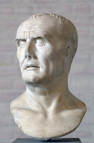

 Gaius Julius Caesar[a] (/ˈsiːzər/ SEE-zər, Latin: [ˈɡaːɪ.ʊs ˈjuːlɪ.ʊs ˈkae̯sar]; 12 July 100 BC[b] – 15 March 44 BC),[c] known by his nomen and cognomen Julius Caesar, was a populist Roman dictator, politician, and military general who played a critical role in the events that led to the demise of the Roman Republic and the rise of the Roman Empire. He was also a historian and wrote Latin prose.In 60 BC, Caesar, Crassus and Pompey formed the First Triumvirate, a political alliance that dominated Roman politics for several years. Their attempts to amass power as Populares were opposed by the Optimates within the Roman Senate, among them Cato the Younger with the frequent support of Cicero. Caesar rose to become one of the most powerful politicians in the Roman Republic through a number of his accomplishments, notably his victories in the Gallic Wars, completed by 51 BC. During this time, Caesar became the first Roman general to cross both the English Channel and the Rhine River, when he built a bridge across the Rhine and crossed the Channel to invade Britain. Caesar's wars extended Rome's territory to Britain and past Gaul. These achievements granted him unmatched military power and threatened to eclipse the standing of Pompey, who had realigned himself with the Senate after the death of Crassus in 53 BC. With the Gallic Wars concluded, the Senate ordered Caesar to step down from his military command and return to Rome. Leaving his command in Gaul meant losing his immunity from being charged as a criminal for waging unsanctioned wars. As a result, Caesar found himself with no other options but to cross the Rubicon with the 13th Legion in 49 BC, leaving his province and illegally entering Roman Italy under arms.[3] This began Caesar's civil war, and his victory in the war by 45 BC put him in an unrivalled position of power and influence.